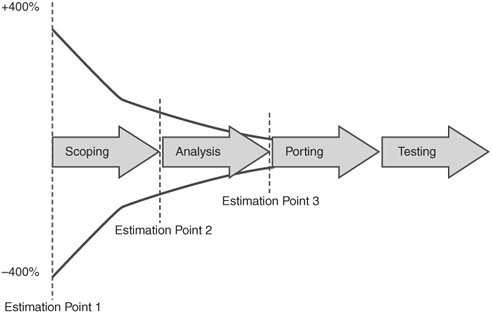

1.5. Creating a Porting Project ScheduleWhen creating the porting schedule, consider all risks, including technical and business-related issues. In terms of technical issues, common things such as resource availability, hardware availability, third-party support, and Linux experience need to be considered. On the business side, issues such as reorganizations, relocations (moving offices), customer release dates, and business objective changes may affect the porting schedule as a whole. These technical and business issues will create several dependencies external to the porting project that may not be controlled; therefore, it is advisable to consider each external issue to mitigate risks accordingly. Creating schedules for porting projects is just like creating schedules for software development projects. Figure 1-2 is an adaptation of a diagram from Radical Project Management by Rob Thomsett (Prentice Hall, 2002, p. 191). The figure shows that the average estimation error made before the project scopes and objectives are cleared up is +400 percent and 400 percent. As the objectives, scope, risks, and other technical and business issues are clarified, the estimated porting schedule comes closer to the real schedule. Figure 1-2. Average estimation error made before scopes and objectives are cleared Each transition to the next step in the porting process allows the project team to reassess the project estimates in terms of the schedule and resources. In essence, these transitions can and should serve not only as milestones for the project but also as checkpoints to reexamine the original estimates. |